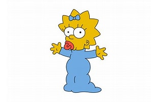

Maggie Simpson
Maggie on perheen vauva, joka harvoin puhuu mutta ilmaisee paljon eleillään. Hän pitää tutistaan, ryömii hiljaa ympäri taloa ja on yllättävän nokkela — jopa sankarillinen tietyissä jaksoissa.
Ääninäyttelijä

Ääniklippit


Maggie on perheen vauva, joka harvoin puhuu mutta ilmaisee paljon eleillään. Hän pitää tutistaan, ryömii hiljaa ympäri taloa ja on yllättävän nokkela — jopa sankarillinen tietyissä jaksoissa.
